7.10.1. markdown 语法
7.10.1.1. 标题
markdown中使用 # 来创建标题, # 的数量代表了标题的级别．
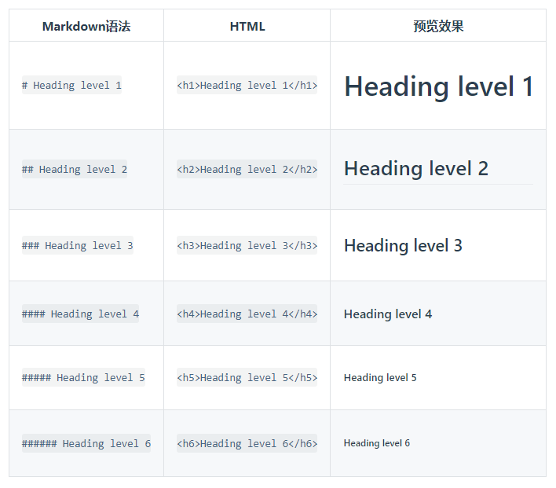
7.10.1.2. 段落
需要创建段落，则使用空白行进行分割
7.10.1.3. 换行
在一行的末尾添加两个或多个空格，然后按回车键，则可以创建一个换行
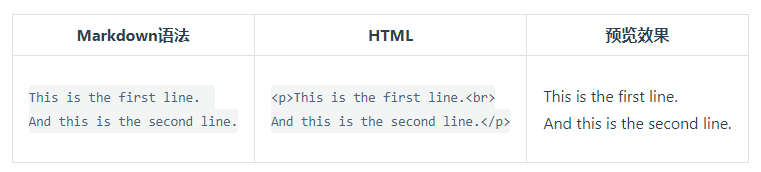
7.10.1.4. 强调
7.10.1.4.1. 粗体
如果要加粗文本，则在要加粗的文本前后添加两个星号或下划线
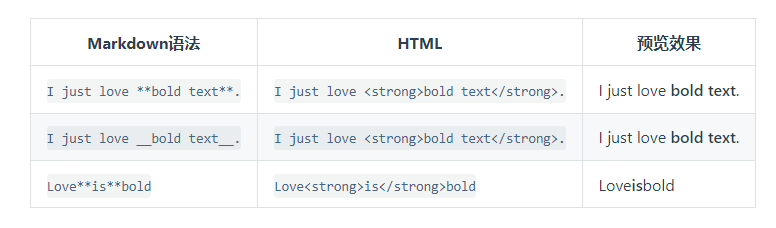
7.10.1.4.2. 斜体
在文本前后添加一个星号或下划线,则会实现斜体
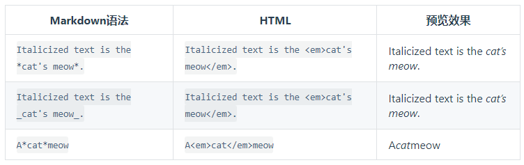
要同时使用粗体和斜体，则需要使用三个星号或下划线
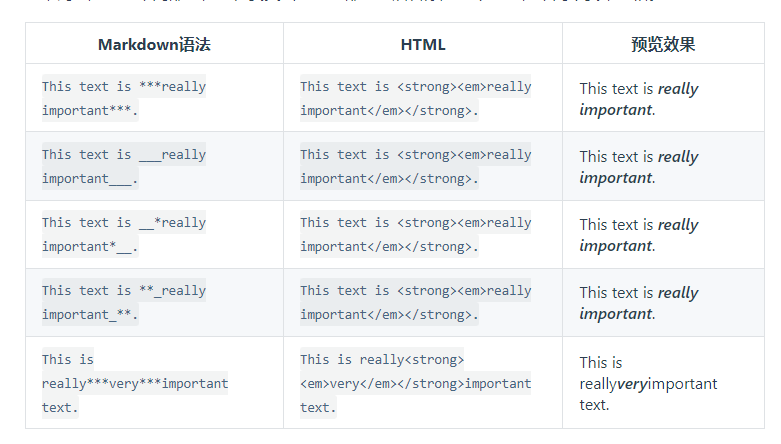
7.10.1.5. 引用
要创建块引用，则在段落前加一个
>符号
> Dorothy followed her through many of the beautiful rooms in her castle.
渲染效果如下
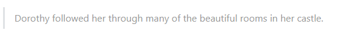
多个段落的块引用，则在段落之间空白行添加一个
>
> Dorothy followed her through many of the beautiful rooms in her castle.
>
> The Witch bade her clean the pots and kettles and sweep the floor and keep the fire fed with wood.
渲染效果如下
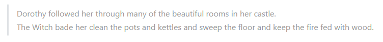
嵌套块引用，在要嵌套的段落前添加一个
>>符号
> Dorothy followed her through many of the beautiful rooms in her castle.
>
>> The Witch bade her clean the pots and kettles and sweep the floor and keep the fire fed with wood.
渲染效果如下
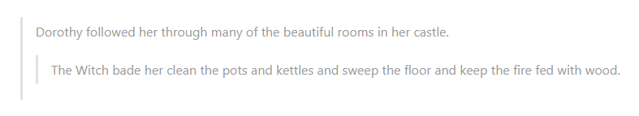
带有其他元素的块引用
> #### The quarterly results look great!
>
> - Revenue was off the chart.
> - Profits were higher than ever.
>
> *Everything* is going according to **plan**.
渲染效果如下
7.10.1.6. 列表
在每个列表项前加数字和英文句点可以创建有序表
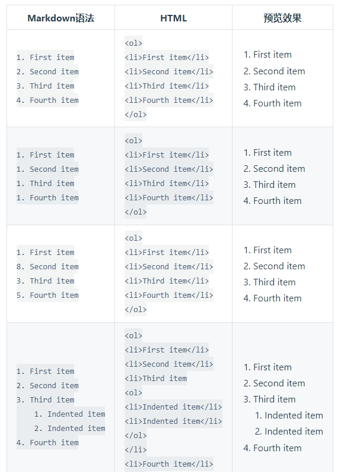
在每个列表项前面添加 - , * , + ,则可以创建无序表
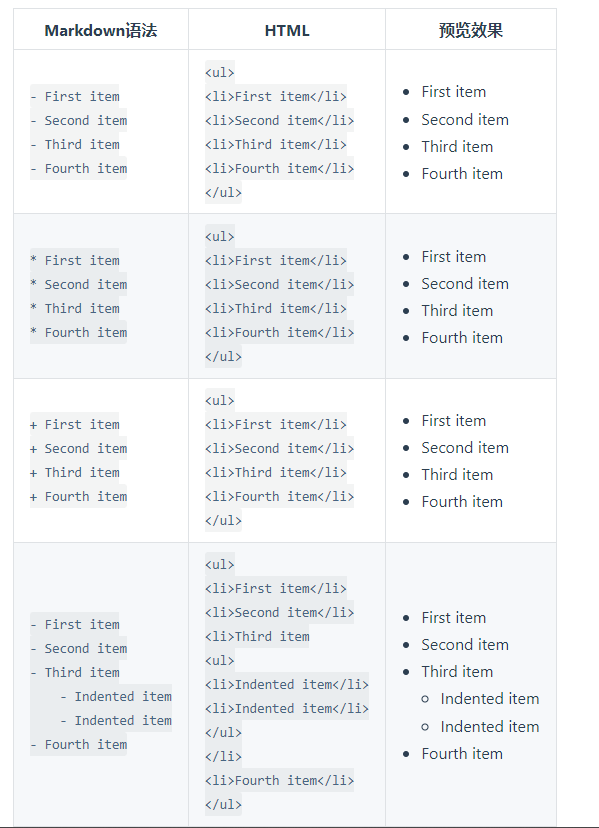
在列表中嵌套其他元素时，需要将该元素缩进四个空格或一个制表符
* This is the first list item.
* Here's the second list item.
I need to add another paragraph below the second list item.
* And here's the third list item.
渲染效果如下
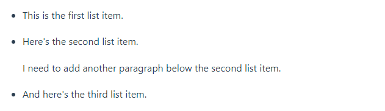
7.10.1.7. 代码
要将单词或短语表示为代码，请将其包裹在反引号 (`) 中。
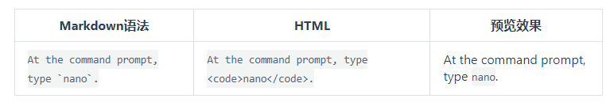
要创建代码块则需要在每一行缩进至少四个空格或一个制表符
7.10.1.8. 分割线
如果需要创建分割线，则在单独一行上使用三个或多个星号(***),破折号 (—) 或下划线 (___) ，并且不能包含其他内容。
***
---
_______________
7.10.1.9. 链接
超链接语法
[超链接显示名](超链接地址 "超链接title")
示例
这是一个链接 [Markdown语法](https://markdown.com.cn)。
使用尖括号可以很方便地把URL或者email地址变成可点击的链接。
<https://markdown.com.cn>
<fake@example.com>
7.10.1.10. 图片
图片markdown语法:

例子